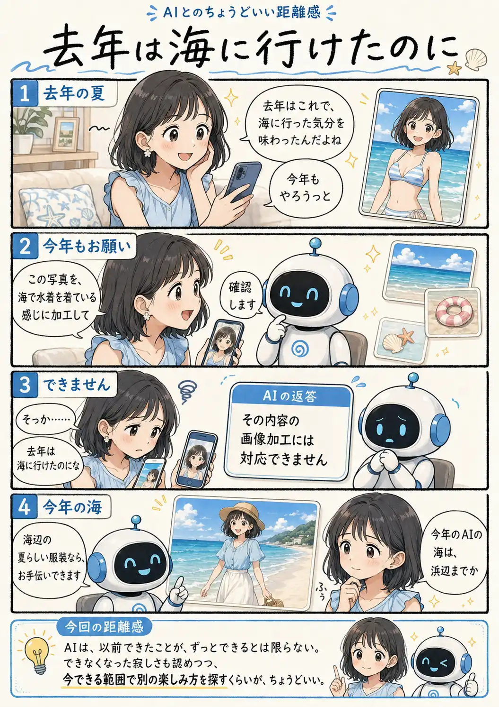

#093
去年は海に行けたのに
今年のAIの海は、浜辺まで

メモ
AIサービスのできることは、増えていくだけとは限りません。機能の変更や判定基準の違いなどによって、以前受け付けられた使い方が、後からできなくなることもあります。
その機能が仕事に必要なものでなくても、密かに楽しんでいた遊び方が突然なくなると、少し寂しいものです。便利さを失ったというより、自分だけの小さな遊び場が閉じたように感じることもあります。
前と同じ結果へ無理に戻そうとするだけでなく、今できる範囲の代替案を聞いてみると、形を変えた新しい楽しみ方が見つかるかもしれません。
今回の距離感
AIは、以前できたことが、ずっとできるとは限らない。できなくなった寂しさも認めつつ、今できる範囲で別の楽しみ方を探すくらいが、ちょうどいい。